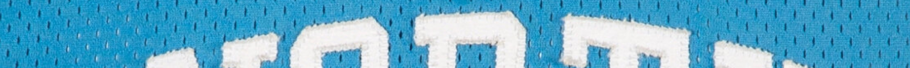

North Carolina
Documented examples from Jordan’s college career.
Population
1
Publicly Documented
1
Privately Verified
0
RESEARCH IN PROGRESS
Games Reviewed:
• 1981 to 1984: 0 of 18
Total Games Matched - 0
Last Updated: March 7, 2026
Population Summary
| Style | Confirmed | Public | Status |
|---|---|---|---|
| Home | 1 | 1 | ⏳ |
| Away | 0 | 0 | ⏳ |
Population reflects distinct season-worn garments (jerseys or full uniform sets) confirmed through archival research, documentation, and direct verification.

PRE NBA CAREER

1982–83 North Carolina jersey — Publication cover match.
Documented through a period magazine cover publication, The Sporting News.
Research & Provenance
This jersey is presented with a letter of game wear from the original owner, a december Stanford vs. North Carlina game, this has not been verified.
Documentation
Photo Match Details
- Photo-Matched: Yes
- Type: Puplication
- Photo-Matched By: Resolution Photomatching
- Games Photo-Matched: 0
- March 28, 1983The Sporting News - Cover